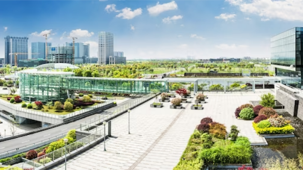

Etiam auctor elementum elit. Fusce et mauris nec nunc maximus
aliquam id et ligula. Duis sodales malesuada sapien non tincidunt.

Ut eget orci ac dolor sollicitudin convallis in id massa. Ut
convallis tempus varius. Mauris mollis mauris vitae semper
interdum. Nunc tincidunt enim elit, quis auctor orci aliquet ut.
Mauris turpis sem, vestibulum id consectetur at, posuere quis
elit. Cras viverra lorem nec varius congue.
Proin consectetur purus nec urna pharetra aliquam a id urna. Sed
ipsum ante, auctor nec rutrum id, placerat et risus. Orci varius
natoque penatibus et magnis dis parturient montes, nascetur
ridiculus mus.
Mauris et maximus quam, id elementum metus. Mauris ac tortor
non ante aliquet pretium vel et mi. Pellentesque pulvinar vitae
nunc sit amet dictum. Leo eros imperdiet dolor, sed viverra leo
neque quis lectus. Mauris id tincidunt nunc, nec fringilla est.
Phasellus ut enim cursus, faucibus metus mollis, ullamcorper eros.
Aenean commodo libero urna, ac mattis purus placerat ac.
Sed volutpat laoreet sagittis. Pellentesque eget orci
hendrerit augue vulputate dictum. Nam pulvinar ac arcu in
faucibus. Ut massa sem, ullamcorper non consequat ac, sodales vel
tortor. Vestibulum ut metus eu arcu consequat molestie non at
ipsum. Aliquam condimentum libero at finibus porttitor. Vestibulum
ut metus eu arcu consequat molestie non at ipsum. Aliquam
condimentum